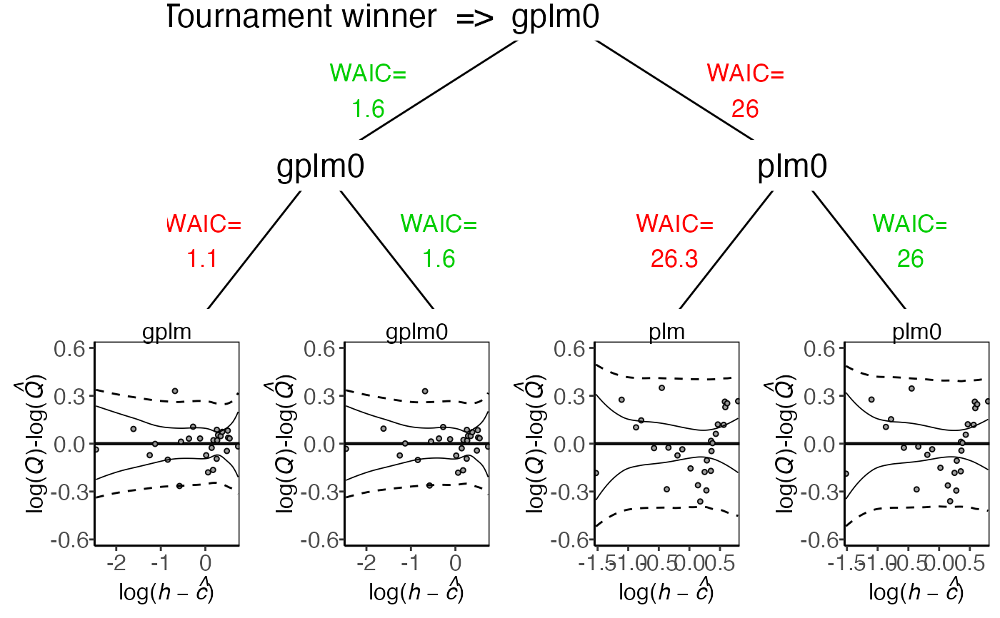
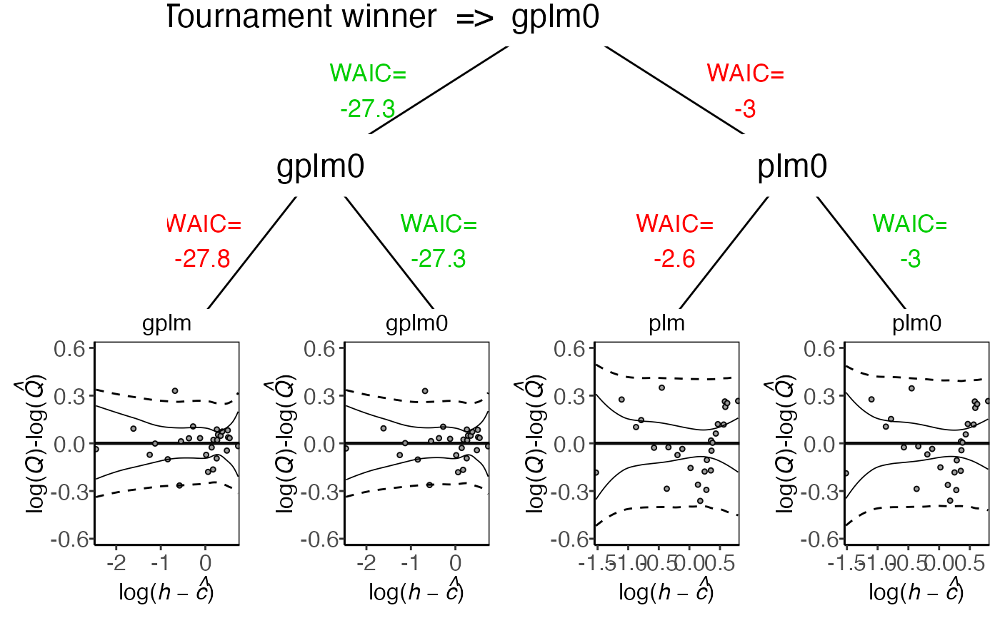

Compare the four models from the tournament object in multiple ways
Usage
# S3 method for class 'tournament'
plot(x, ..., type = "tournament_results", transformed = FALSE)Arguments
- x
An object of class "tournament"
- ...
Other plotting parameters (not used in this function)
- type
A character denoting what type of plot should be drawn. Possible types are
"boxplot" create a boxplot of the posterior log-likelihood values, on the deviance scale.
"rating_curve" to plot the rating curve.
"rating_curve_mean" to plot the posterior mean of the rating curve.
"f" to plot the power-law exponent.
"sigma_eps" to plot the standard deviation on the data level.
"residuals" to plot the log residuals.
"tournament_results" to plot tournament results visually, game for game.
- transformed
A logical value indicating whether the quantity should be plotted on a transformed scale used during the Bayesian inference. Defaults to FALSE.
See also
tournament to run a discharge rating curve tournament and summary.tournament for summaries.
Examples
# \donttest{
data(krokfors)
set.seed(1)
t_obj <- tournament(formula=Q~W,data=krokfors,num_cores=2)
#> Running tournament [ ] 0%
#>
#> Progress:
#> Initializing Metropolis MCMC algorithm...
#> Multiprocess sampling (4 chains in 2 jobs) ...
#>
#> MCMC sampling completed!
#>
#> Diagnostics:
#> Acceptance rate: 25.33%.
#> ✔ All chains have mixed well (Rhat < 1.1).
#> ✔ Effective sample sizes sufficient (eff_n_samples > 400).
#>
#> - gplm finished [============ ] 25%
#>
#> Progress:
#> Initializing Metropolis MCMC algorithm...
#> Multiprocess sampling (4 chains in 2 jobs) ...
#>
#> MCMC sampling completed!
#>
#> Diagnostics:
#> Acceptance rate: 31.14%.
#> ✔ All chains have mixed well (Rhat < 1.1).
#> ✔ Effective sample sizes sufficient (eff_n_samples > 400).
#>
#> - gplm0 finished [======================== ] 50%
#>
#> Progress:
#> Initializing Metropolis MCMC algorithm...
#> Multiprocess sampling (4 chains in 2 jobs) ...
#>
#> MCMC sampling completed!
#>
#> Diagnostics:
#> Acceptance rate: 25.66%.
#> ✔ All chains have mixed well (Rhat < 1.1).
#> ✔ Effective sample sizes sufficient (eff_n_samples > 400).
#>
#> - plm finished [==================================== ] 75%
#>
#> Progress:
#> Initializing Metropolis MCMC algorithm...
#> Multiprocess sampling (4 chains in 2 jobs) ...
#>
#> MCMC sampling completed!
#>
#> Diagnostics:
#> Acceptance rate: 36.04%.
#> ✔ All chains have mixed well (Rhat < 1.1).
#> ✔ Effective sample sizes sufficient (eff_n_samples > 400).
#>
#> - plm0 finished [================================================] 100%
#>
#> Tournament winner: gplm0
plot(t_obj)
plot(t_obj,transformed=TRUE)

plot(t_obj,type='boxplot')
plot(t_obj,type='f')
plot(t_obj,type='sigma_eps')
plot(t_obj,type='residuals')
plot(t_obj,type='tournament_results')

# }